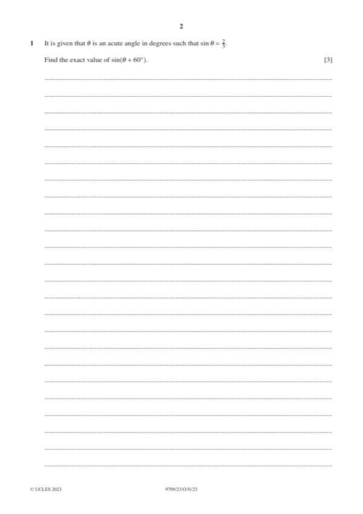

Question 1

Original paper page 2
Part 1 — solution
- [B1] or exact equivalent
Mark points
- [B1] or exact equivalent
Part 1 — solution
- [A1] or exact equivalent
Mark points
- [A1] or exact equivalent
Part 1 — solution
DM1
Substitute π into attempt at first derivative and attempt evaluation to
Mark points
- Include the ideas shown in the solution above.
Part 1 — solution
15 1 3
e − e
B1FT or exact equivalent, FT on their ke 2 x −5 .
Mark points
- Include the ideas shown in the solution above.